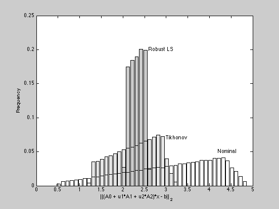

Comparison of worst-case robust, Tickhonov and nominal least squares
clear
cvx_quiet(false);
m = 50;
n = 20;
randn('state',0);
rand('state',0);
A0 = randn(m,n);
[U,S,V] = svd(A0);
S= diag(fliplr(logspace(-0.7,1,n)));
A0 = U(:,1:n)*S*V';
A1 = randn(m,n); A1 = A1/norm(A1);
A2 = randn(m,n); A2 = A2/norm(A2);
Aperb0 = [A1;A2];
p = 2;
b = U(:,1:n)*randn(n,1) + .1*randn(m,1);
xnom = A0\b;
delta = .1;
xtych = [A0; sqrt(delta)*eye(n)] \ [b; zeros(n,1)];
cvx_begin sdp
variables t lambda xrob(n)
minimize(t+lambda)
subject to
[eye(m) A1*xrob A2*xrob A0*xrob-b; ...
[A1*xrob A2*xrob]' lambda*eye(2) zeros(2,1); ...
[A0*xrob-b]' zeros(1,2) t] >= 0;
cvx_end
notrials=100000;
r = sqrt(rand(notrials,1));
theta = 2*pi*rand(notrials,1);
v = [r.*cos(theta) r.*sin(theta)];
ls_res = zeros(1,notrials);
rob2_res = zeros(1,notrials);
rob_res = zeros(1,notrials);
tych_res = zeros(1,notrials);
for i =1:notrials
A = A0 + v(i,1)*A1 + v(i,2)*A2;
ls_res(i) = norm(A*xnom-b);
rob_res(i) = norm(A*xrob-b);
tych_res(i) = norm(A*xtych-b);
end;
figure
[N1, hist1] = hist(ls_res,[min(ls_res):.1:max(ls_res)]);
freq1 = N1/notrials;
[N2, hist2] = hist(rob_res,hist1);
freq2 = N2/notrials;
[N3, hist3] = hist(tych_res,hist1);
freq3 = N3/notrials;
h = bar(hist3,freq3);
text(3, 0.07, 'Tikhonov');
set(h,'FaceColor',0.90*[1 1 1]);
hold on
h = bar(hist2,freq2);
text(4.2, 0.05, 'Nominal');
set(h,'FaceColor',0.80*[1 1 1]);
h = bar(hist2,freq2);
set(h,'FaceColor','none');
text(2.6, 0.2, 'Robust LS');
h = bar(hist3,freq3);
set(h,'FaceColor','none');
h = bar(hist1,freq1);
set(h,'FaceColor','none');
xlabel('||(A0 + u1*A1 + u2*A2)*x - b||_2')
ylabel('Frequency')
hold off
Calling SeDuMi: 1451 variables (20 free), 1429 equality constraints
------------------------------------------------------------------------
SeDuMi 1.1 by AdvOL, 2005 and Jos F. Sturm, 1998, 2001-2003.
Alg = 2: xz-corrector, Adaptive Step-Differentiation, theta = 0.250, beta = 0.500
Split 20 free variables
eqs m = 1429, order n = 94, dim = 2850, blocks = 2
nnz(A) = 7430 + 0, nnz(ADA) = 2042041, nnz(L) = 1021735
it : b*y gap delta rate t/tP* t/tD* feas cg cg prec
0 : 3.68E-001 0.000
1 : 5.13E+000 1.23E-001 0.000 0.3345 0.9000 0.9000 2.53 1 1 7.0E-001
2 : 6.12E+000 3.39E-002 0.000 0.2757 0.9000 0.9000 1.34 1 1 1.7E-001
3 : 6.59E+000 6.42E-003 0.000 0.1896 0.9000 0.9000 1.07 1 1 3.3E-002
4 : 6.74E+000 4.87E-004 0.000 0.0758 0.9900 0.9900 1.01 1 1 2.5E-003
5 : 6.76E+000 1.09E-004 0.000 0.2238 0.9000 0.9000 1.00 1 1 5.7E-004
6 : 6.76E+000 8.25E-007 0.120 0.0076 0.9166 0.9900 1.00 1 1 5.6E-005
7 : 6.76E+000 2.01E-007 0.000 0.2439 0.9000 0.8356 1.00 1 1 1.3E-005
8 : 6.76E+000 1.95E-008 0.170 0.0968 0.9900 0.9162 1.00 1 1 1.3E-006
9 : 6.76E+000 3.44E-009 0.000 0.1765 0.8235 0.9000 1.00 2 1 2.3E-007
10 : 6.76E+000 2.19E-010 0.408 0.0637 0.9900 0.9882 1.00 2 2 1.4E-008
iter seconds digits c*x b*y
10 86.1 Inf 6.7594994749e+000 6.7594994957e+000
|Ax-b| = 6.9e-008, [Ay-c]_+ = 6.1E-009, |x|= 1.4e+001, |y|= 8.7e+000
Detailed timing (sec)
Pre IPM Post
8.612E-001 8.608E+001 1.001E-002
Max-norms: ||b||=1.466545e+000, ||c|| = 1,
Cholesky |add|=0, |skip| = 0, ||L.L|| = 8.39482.
------------------------------------------------------------------------
Status: Solved
Optimal value (cvx_optval): +6.7595
